us_change |>
pivot_longer(c(Consumption, Income), names_to = "Measure", values_to = "Change") |>
autoplot(Change) +
labs(x = "Year", y = "% change") AFRICAST
AFRICASTTidy time series & forecasting in R
Forecasting with regression
Representing temporal structure with regressors
Session 5 of 10


workshop.f4sg.org/africastForecasting for Social Good
The linear model with time series
Regression models
To explain
To forecast
Simple linear regression model (SLR)
Multiple linear regression model (MLR)
SLR model in theory
Regression model allows for a linear relationship between the forecast variable \(y\) and a single predictor variable \(x\).
\[ y_t = \beta_0 + \beta_1 x_{t} + \varepsilon_t. \]
- \(y_t\) is the variable we want to predict: the “response” variable
- Each \(x_{t}\) is numerical and is called a “predictor”
- \(\beta_0\) and \(\beta_1\) are regression coefficients
SLR model in practice
In practice, of course, we have a collection of observations but we do not know the values of the coefficients \(\beta_0\), \(\beta_1\). These need to be estimated from the data.
\[ \hat{y}_t = \hat\beta_0 + \hat\beta_1 x_{t}. \]
- \(\hat{y}_t\) is the fitted value of the response
- Each \(x_{t}\) is a “predictor”
- \(\hat\beta_0\) is the estimated intercept
- \(\hat\beta_1\) is the estimated slope
What is the best fit
- There are many ways that a straight line can be laid on the scatter
- Best known criterion is called Ordinary Least Squares (OLS)
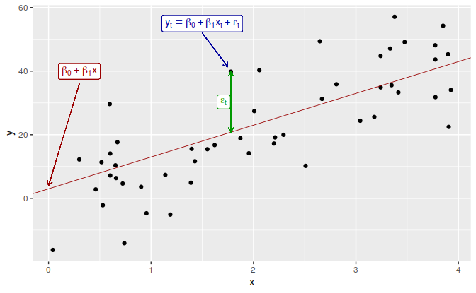
Estimation of the model
Least squares chooses the values of \(\beta_0\) and \(\beta_1\) which minimise
\[ \sum_{t=1}^T e_{t}^2 = \sum_{t=1}^T (y_{t} - \beta_{0} - \beta_{1}x_{t})^2. \]
- This is called least squares estimation because it gives the smallest value of the sum of squared errors.
- Finding the best estimates of the coefficients is often called fitting the model to the data.
- We refer to the estimated coefficients using the notation \(\hat\beta_{0},\hat\beta_{1}\).
Example: US consumption expenditure
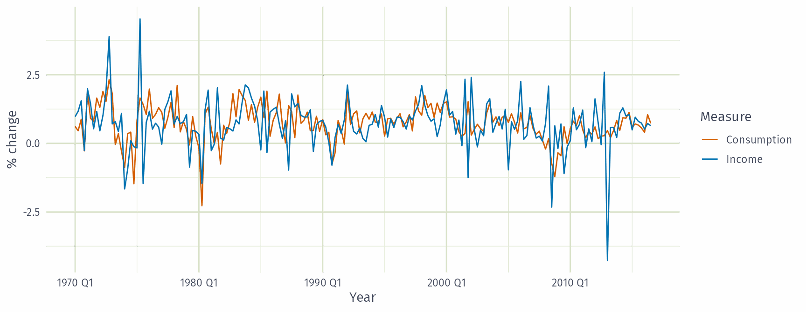
Example: US consumption expenditure
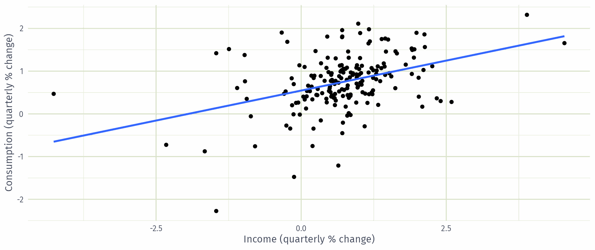
Example: US consumption expenditure
Series: Consumption
Model: TSLM
Residuals:
Min 1Q Median 3Q Max
-2.408 -0.318 0.026 0.300 1.452
Coefficients:
Estimate Std. Error t value Pr(>|t|)
(Intercept) 0.5451 0.0557 9.79 < 2e-16 ***
Income 0.2806 0.0474 5.91 1.6e-08 ***
---
Signif. codes: 0 '***' 0.001 '**' 0.01 '*' 0.05 '.' 0.1 ' ' 1
Residual standard error: 0.603 on 185 degrees of freedom
Multiple R-squared: 0.159, Adjusted R-squared: 0.154
F-statistic: 35 on 1 and 185 DF, p-value: 2e-08Interpretation
A 1 percentage point rise in income growth goes with a 0.28 point rise in consumption growth.
Income alone explains little: \(R^2 = 0.16\).
Multiple regression
- In multiple regression there is one variable to be forecast and several predictor variables.
- The basic concept is that we forecast the time series of interest \(y\) assuming that it has a linear relationship with other time series \(x_1\), \(x_2\), …, \(x_k\)
- We might forecast daily A&E attendance \(y\) using temperature \(x_1\) and GP visits \(x_2\) as predictors.
How many predictors?
You can add as many as you want but be aware of:
- Over-fitting
- Multicollinearity
Multiple regression and forecasting
\[ y_t = \beta_0 + \beta_1 x_{1,t} + \beta_2 x_{2,t} + \cdots + \beta_kx_{k,t} + \varepsilon_t. \]
\(y_t\) is the variable we want to predict: the “response” variable
Each \(x_{j,t}\) is numerical and is called a “predictor”. They are usually assumed to be known for all past and future times.
The coefficients \(\beta_1,\dots,\beta_k\) measure the effect of each predictor after taking account of the effect of all other predictors in the model.
- That is, the coefficients measure the marginal effects.
\(\varepsilon_t\) is a white noise error term
Estimation of the model
Least squares chooses the values of \(\beta_{0},\dots,\beta_{k}\) which minimise
\[ \sum_{t=1}^T e_{t}^2 = \sum_{t=1}^T (y_{t} - \beta_{0} - \beta_{1}x_{1,t} - \cdots - \beta_{k} x_{k,t})^2. \]
- This is called least squares estimation because it gives the smallest value of the sum of squared errors
- Finding the best estimates of the coefficients is often called fitting the model to the data
- We refer to the estimated coefficients using the notation \(\hat\beta_{0},\dots,\hat\beta_{k}\).
Useful predictors in linear regression
Linear trend \[ x_t = t \]
- \(t=1,2,\dots,T\)
- Strong assumption that trend will continue.
- use special function
trend()
Seasonality
- Seasonality will be considered based on the interval of index
- use special function
season()
Example: US consumption expenditure
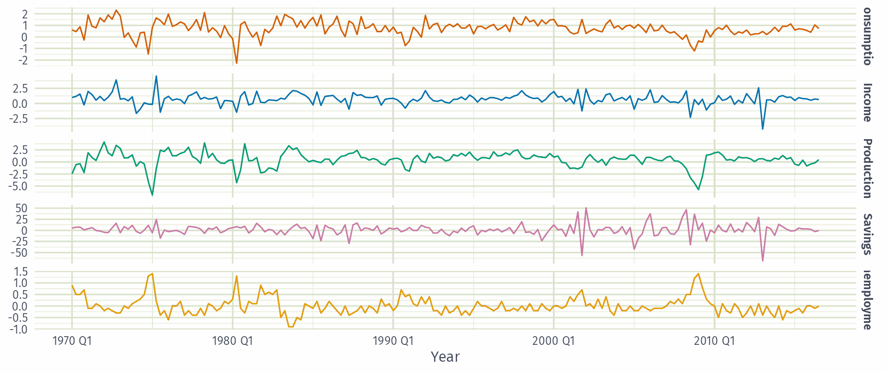
Example: US consumption expenditure
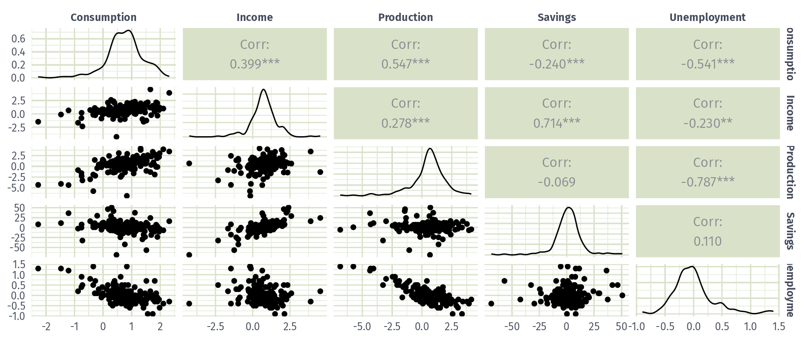
Example: US consumption expenditure
Series: Consumption
Model: TSLM
Residuals:
Min 1Q Median 3Q Max
-0.883 -0.176 -0.037 0.153 1.206
Coefficients:
Estimate Std. Error t value Pr(>|t|)
(Intercept) 0.26729 0.03721 7.18 1.7e-11 ***
Income 0.71448 0.04219 16.93 < 2e-16 ***
Production 0.04589 0.02588 1.77 0.078 .
Unemployment -0.20477 0.10550 -1.94 0.054 .
Savings -0.04527 0.00278 -16.29 < 2e-16 ***
---
Signif. codes: 0 '***' 0.001 '**' 0.01 '*' 0.05 '.' 0.1 ' ' 1
Residual standard error: 0.329 on 182 degrees of freedom
Multiple R-squared: 0.754, Adjusted R-squared: 0.749
F-statistic: 139 on 4 and 182 DF, p-value: <2e-16Interpretation
Each coefficient holds the other predictors fixed.
Production and unemployment are borderline (\(p \approx 0.05\) to \(0.08\)).
\(\bar{R}^2 = 0.75\), far above income alone.
Example: US consumption expenditure
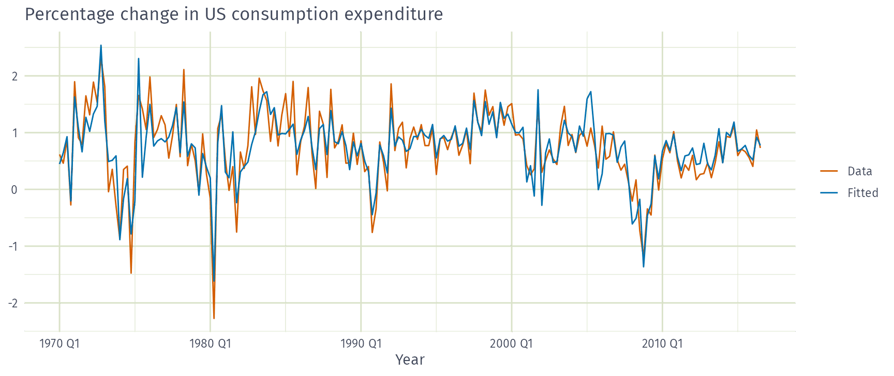
Example: US consumption expenditure
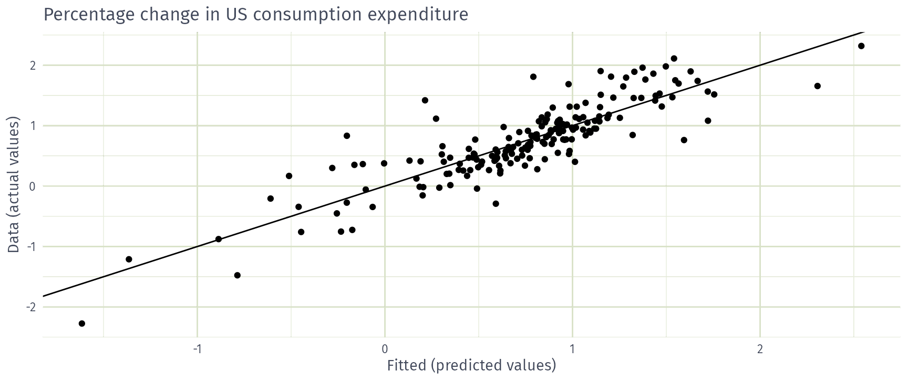
Evaluating the regression model
Assumptions for forecasting
For forecasting purposes, we require the following assumptions:
\(\varepsilon_t\) are uncorrelated and zero mean
\(\varepsilon_t\) are uncorrelated with each \(x_{j,t}\).
It is useful to also have \(\varepsilon_t \sim \text{N}(0,\sigma^2)\) when producing prediction intervals or doing statistical tests.
Residual diagnostics
There are a series of plots that should be produced in order to check different aspects of the fitted model and the underlying assumptions.
- check if residuals are uncorrelated using
ACF - Check if residuals are normally distributed
Example: US consumption expenditure
Residual scatterplots
Useful for spotting outliers and whether the linear model was appropriate.
Scatterplot of residuals \(e_t\) against each predictor \(x_{j,t}\).
Scatterplot residuals against the fitted values \(\hat y_t\)
Expect to see scatterplots resembling a horizontal band with no values too far from the band and no patterns such as curvature or increasing spread.
Example: US consumption expenditure
Interpretation
No curvature or fanning: linear terms look adequate.
Residual patterns
If a plot of the residuals vs any predictor in the model shows a pattern, then the relationship is non-linear.
If a plot of the residuals vs any predictor not in the model shows a pattern, then the predictor should be added to the model.
If a plot of the residuals vs fitted values shows a pattern, then there is heteroscedasticity in the errors. (Could try a transformation.)
Selecting predictors
Comparing regression models
Computer output for regression will always give the \(R^2\) value. This is a useful summary of the model.
It is equal to the square of the correlation between \(y\) and \(\hat y\).
It is often called the “coefficient of determination”.
It can also be calculated as follows: \(R^2 = \frac{\sum(\hat{y}_t - \bar{y})^2}{\sum(y_t-\bar{y})^2}\)
It is the proportion of variance accounted for (explained) by the predictors.
Adding predictors
Adding a useless predictor to a regression model makes R²…
- Increase or stay the same
- Decrease
- Change unpredictably
Comparing regression models
However …
\(R^2\) does not penalise model size.
Adding any variable tends to increase the value of \(R^2\), even if that variable is irrelevant.
To overcome this problem, we can use adjusted \(R^2\):
\[ \bar{R}^2 = 1-(1-R^2)\frac{T-1}{T-k-1} \] where \(k=\) no. predictors and \(T=\) no. observations.
Maximising \(\bar{R}^2\) is equivalent to minimising \(\hat\sigma^2\).
\(\displaystyle \hat{\sigma}^2 = \frac{1}{T-k-1}\sum_{t=1}^T e_t^2\)
Cross-validation
Remove observation \(t\) from the data set, and fit the model using the remaining data. Then compute the error for the omitted observation
Repeat step 1 for \(t=1,...,T\)
Compute the MSE from errors obtained in 1. We shall call this the CV
Akaike’s Information Criterion
\[ \text{AIC} = -2\log(L) + 2(k+2) \]
where \(L\) is the likelihood and \(k\) is the number of predictors in the model.
- This is a penalised likelihood approach.
- Minimising the AIC tends to give the best model for prediction.
- \(\bar{R}^2\) tends to select too many predictors, so prefer CV, AIC or AICc.
- Minimising the AIC is asymptotically equivalent to minimising MSE via leave-one-out cross-validation.
Corrected AIC
For small values of \(T\), the AIC tends to select too many predictors, and so a bias-corrected version of the AIC has been developed.
\[ \text{AIC}_{\text{C}} = \text{AIC} + \frac{2(k+2)(k+3)}{T-k-3} \]
As with the AIC, the AIC\(_{\text{C}}\) should be minimised.
Choosing regression variables
Best subsets regression
Fit all possible regression models using one or more of the predictors.
Choose the best model based on one of the measures of predictive ability (CV, AIC, AICc).
Choosing regression variables
Backwards stepwise regression
- Start with a model containing all variables.
- Try subtracting one variable at a time. Keep the model if it has lower CV or AICc.
- Iterate until no further improvement.
- You can also do forward stepwise
Example: candidate models
Start from the full model, then drop one predictor at a time.
fit_candidates <- us_change |>
model(
full = TSLM(Consumption ~ Income + Production + Unemployment + Savings),
no_income = TSLM(Consumption ~ Production + Unemployment + Savings),
no_production = TSLM(Consumption ~ Income + Unemployment + Savings),
no_unemployment = TSLM(Consumption ~ Income + Production + Savings),
no_savings = TSLM(Consumption ~ Income + Production + Unemployment)
)Example: candidate models
Which predictor can we most afford to drop from the full model?
- Income
- Production
- Unemployment
- Savings
Example: comparing candidate models
# A tibble: 5 × 5
.model adj_r_squared CV AIC AICc
<chr> <dbl> <dbl> <dbl> <dbl>
1 full 0.749 0.116 -409. -409.
2 no_production 0.746 0.116 -408. -408.
3 no_unemployment 0.745 0.118 -407. -407.
4 no_savings 0.386 0.278 -243. -243.
5 no_income 0.356 0.293 -234. -234.Interpretation
The full model has the lowest AICc and CV, so keep all four predictors.
Dropping production is almost as good; dropping income or savings is much worse.
Forecasting with regression
Ex-ante versus ex-post forecasts
- Ex ante forecasts are made using only information available in advance.
- require forecasts of predictors
- Ex post forecasts are made using later information on the predictors.
- useful for studying behaviour of forecasting models.
- trend, seasonal and calendar variables are all known in advance, so these don’t need to be forecast.
Scenario based forecasting
- Assumes possible scenarios for the predictor variables
- Prediction intervals for scenario based forecasts do not include the uncertainty associated with the future values of the predictor variables.
Building a predictive regression model
- If getting forecasts of predictors is difficult, you can use lagged predictors instead.
\[ y_t = \beta_0+\beta_1x_{1,t-h}+\dots+\beta_kx_{k,t-h}+\varepsilon_{t}. \]
- A different model for each forecast horizon \(h\).
US Consumption
future_scenarios <- scenarios(
Increase = new_data(us_change, 4) |>
mutate(Income = 1, Savings = 0.5, Unemployment = 0, Production = 0),
Decrease = new_data(us_change, 4) |>
mutate(Income = -1, Savings = -0.5, Unemployment = 0, Production = 0),
names_to = "Scenario"
)
fc_scenarios <- forecast(fit_full, new_data = future_scenarios)US Consumption
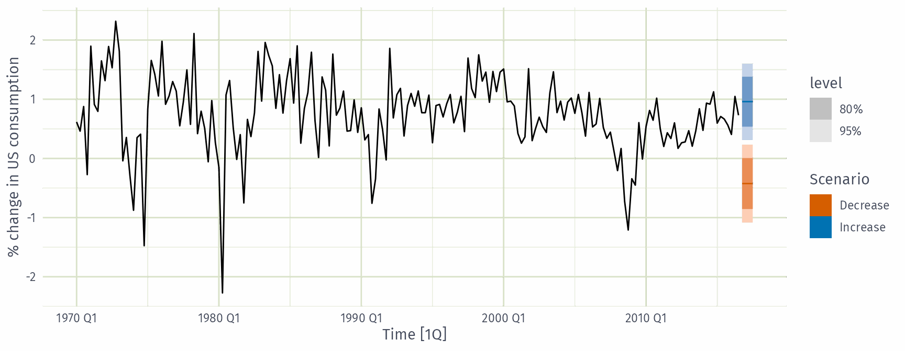
Interpretation
Scenarios shift the point forecasts. The intervals ignore uncertainty in the future predictors.
Correlation, causation and forecasting
Correlation does not imply causation
Check out https://www.tylervigen.com/spurious-correlations
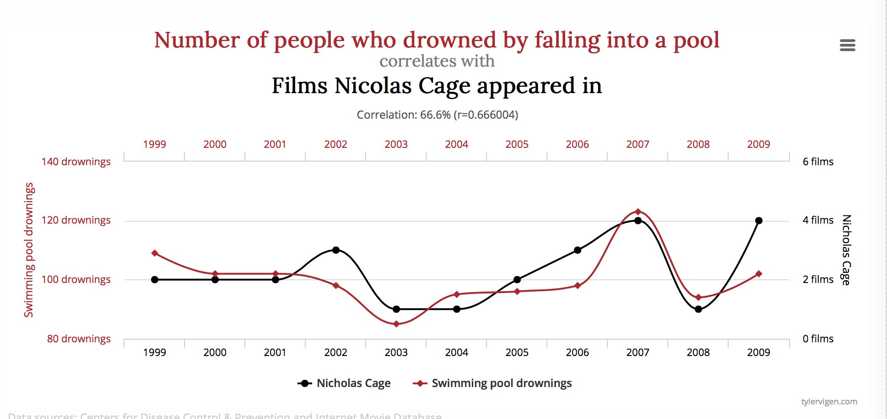
Correlation and forecasting
Ice-cream sales are strongly correlated with drownings. Are ice-cream sales useful for forecasting drownings?
- Yes
- No
Correlation is not causation
When \(x\) is useful for predicting \(y\), it is not necessarily causing \(y\).
e.g., predict number of drownings \(y\) using number of ice-creams sold \(x\).
Correlations are useful for forecasting, even when there is no causality.
Better models usually involve causal relationships (e.g., temperature and number of swimmers to predict drownings).
Multicollinearity
In regression analysis, multicollinearity occurs when:
- Two predictors are highly correlated (i.e., the correlation between them is close to \(\pm1\)).
- A linear combination of some of the predictors is highly correlated with another predictor.
- A linear combination of one subset of predictors is highly correlated with a linear combination of another subset of predictors.
Multicollinearity
If multicollinearity exists…
- coefficient estimates become unstable and have large standard errors
- don’t rely on the \(p\)-values to determine significance.
- there is no problem with model predictions provided the predictors used for forecasting are within the range used for fitting.
- omitting variables can help.
- combining variables can help.
Outliers and influential observations
Things to watch for
- Outliers: observations that produce large residuals.
- Influential observations: removing them would markedly change the coefficients. (Often outliers in the \(x\) variable).
- Lurking variable: a predictor not included in the regression but which has an important effect on the response.
- Points should not normally be removed without a good explanation of why they are different.
Modern regression models
- Suppose we had 44 predictors instead of 4.
- That gives \(2^{44} \approx 18\) trillion possible models!
- Best subsets and stepwise search become infeasible.
- Shrinkage methods (lasso, ridge, elastic net) handle this, but are beyond this workshop.
Some useful predictors for regression models
Dummy variables
If a categorical variable takes only two values (e.g., “Yes” or “No”), then an equivalent numerical variable can be constructed taking value 1 if yes and 0 if no. This is called a dummy variable.
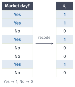
Dummy variables
If there are more than two categories, then the variable can be coded using several dummy variables (one fewer than the total number of categories).
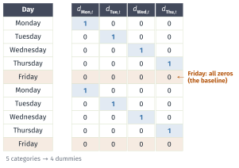
Beware of the dummy variable trap!
Using one dummy for each category gives too many dummy variables!
The regression will then be singular and inestimable.
Either omit the constant, or omit the dummy for one category.
The coefficients of the dummies are relative to the omitted category.
Uses of dummy variables
Seasonal dummies
- For quarterly data: use 3 dummies
- For monthly data: use 11 dummies
- For daily data: use 6 dummies
Outliers
- If there is an outlier, you can use a dummy variable to remove its effect.
Public holidays
- For daily data: if it is a public holiday, dummy=1, otherwise dummy=0.
Intervention variables
Spikes
- Equivalent to a dummy variable for handling an outlier.
Steps
- Variable takes value 0 before the intervention and 1 afterwards.
Change of slope
Variables take values 0 before the intervention and values \(\{1,2,3,\dots\}\) afterwards.
this could also be handled using a piecewise trend,
trend(knots = ...)
Special events as dummies
- Christmas Eve: if Christmas Eve, \(v_t=1\), \(v_t=0\) otherwise
- New year’s Day: if New year’s Day, \(v_t=1\), \(v_t=0\) otherwise.
- and more: Ramadan and Chinese new year, school holiday, etc
Interactions
For example, sometimes the effect of a particular event might be different if it is on a weekend or a week day or its effect might be different in each shift:
- you need to introduce an interaction variable
- in a model formula,
v1 * v2includes both main effects and their interactionv1:v2
Lagged predictors
The model includes present and past values of the predictor: \(x_t,x_{t-1},x_{t-2},\dots.\)
\[ y_{t} = \beta_0 + \gamma_{0} x_{t} + \gamma_{1} x_{t-1} + \dots + \gamma_{k} x_{t-k} + \varepsilon_{t} \]
- \(x\) can influence \(y\), but \(y\) is not allowed to influence \(x\).
Lagged predictors
- Lagged values of a predictor:
- Create new variables by shifting the existing variable backwards
Example: \(x\) is advertising which has a delayed effect
\[\begin{aligned} x_{1} &= \text{advertising for previous month;} \\ x_{2} &= \text{advertising for two months previously;} \\ & \vdots \\ x_{m} &= \text{advertising for $m$ months previously.} \end{aligned}\]
Example: Insurance quotes and TV adverts
# A tsibble: 40 x 3 [1M]
Month Quotes TVadverts
<mth> <dbl> <dbl>
1 2002 Jan 13.0 7.21
2 2002 Feb 15.4 9.44
3 2002 Mar 13.2 7.53
4 2002 Apr 13.0 7.21
5 2002 May 15.4 9.44
6 2002 Jun 11.7 6.42
7 2002 Jul 10.1 5.81
8 2002 Aug 10.8 6.20
9 2002 Sep 13.3 7.59
10 2002 Oct 14.6 8.00
# ℹ 30 more rowsExample: Insurance quotes and TV adverts
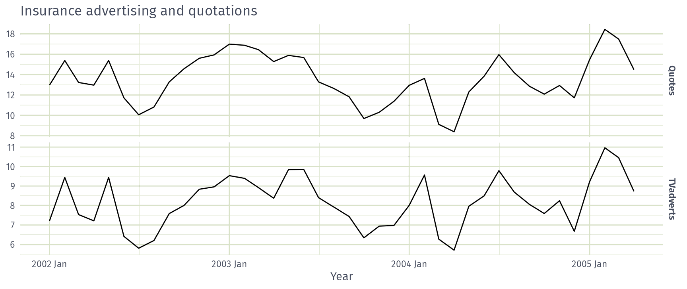
Example: Insurance quotes and TV adverts
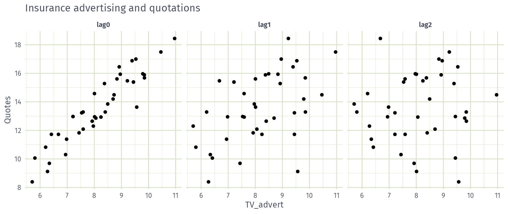
Example: Insurance quotes and TV adverts
fit_lags <- insurance |>
# Restrict data so models use same fitting period
mutate(Quotes = c(NA, NA, NA, Quotes[4:40])) |>
model(
lag0 = TSLM(Quotes ~ TVadverts),
lag1 = TSLM(Quotes ~ TVadverts + lag(TVadverts)),
lag2 = TSLM(Quotes ~ TVadverts + lag(TVadverts) + lag(TVadverts, 2)),
lag3 = TSLM(Quotes ~ TVadverts + lag(TVadverts) + lag(TVadverts, 2) +
lag(TVadverts, 3))
)Example: Insurance quotes and TV adverts
How many months of lagged TV advertising should the model include?
- 0
- 1
- 2
- 3
Example: Insurance quotes and TV adverts
# A tibble: 4 × 5
.model adj_r_squared CV AIC AICc
<chr> <dbl> <dbl> <dbl> <dbl>
1 lag0 0.866 0.864 -3.38 -2.65
2 lag1 0.865 0.901 -2.17 -0.919
3 lag2 0.861 0.958 -0.208 1.73
4 lag3 0.859 0.995 1.35 4.15 Interpretation
No lag (lag0) has the lowest AICc and CV: quotes respond to advertising in the same month.
Example: Insurance quotes and TV adverts
Series: Quotes
Model: TSLM
Residuals:
Min 1Q Median 3Q Max
-2.327 -0.543 -0.238 0.754 1.588
Coefficients:
Estimate Std. Error t value Pr(>|t|)
(Intercept) -0.240 0.901 -0.27 0.79
TVadverts 1.693 0.109 15.56 <2e-16 ***
---
Signif. codes: 0 '***' 0.001 '**' 0.01 '*' 0.05 '.' 0.1 ' ' 1
Residual standard error: 0.895 on 38 degrees of freedom
Multiple R-squared: 0.864, Adjusted R-squared: 0.861
F-statistic: 242 on 1 and 38 DF, p-value: <2e-16Interpretation
\(\hat{y}_t = -0.24 + 1.69 x_t\): each extra unit of spend brings about 1.7 more quotes that month.
Residuals are strongly autocorrelated (Ljung-Box \(p < 0.001\)), so prediction intervals will be too narrow.
Example: Insurance quotes and TV adverts
future_adverts <- scenarios(
`Spend 10` = new_data(insurance, 20) |> mutate(TVadverts = 10),
`Spend 8` = new_data(insurance, 20) |> mutate(TVadverts = 8),
`Spend 6` = new_data(insurance, 20) |> mutate(TVadverts = 6),
names_to = "Scenario"
)
insurance |> autoplot(Quotes) +
autolayer(forecast(fit_adverts, future_adverts), level = 80)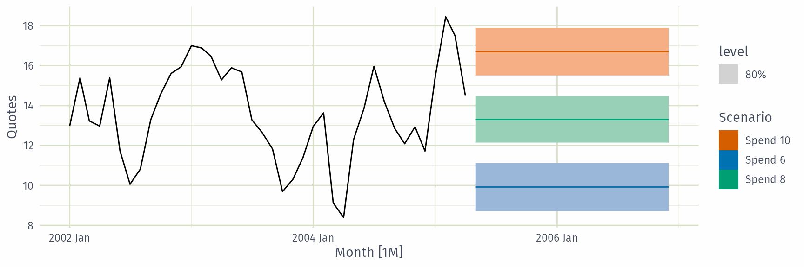
Lead predictors
Sometimes \(y_t\) responds to a change in \(x\) before it happens, because the change is anticipated. Then \(y_t\) depends on future values \(x_{t+1}, x_{t+2}, \dots\)
\[ y_{t} = \beta_0 + \gamma_{0} x_{t} + \gamma_{1} x_{t+1} + \dots + \gamma_{k} x_{t+k} + \varepsilon_{t} \]
- Create lead values by shifting the existing variable forwards with
lead() - e.g. sales \(y_t\) rise before an announced tax increase \(x_t\) takes effect
- Only usable for forecasting when the future \(x\) is known in advance (e.g. announced)